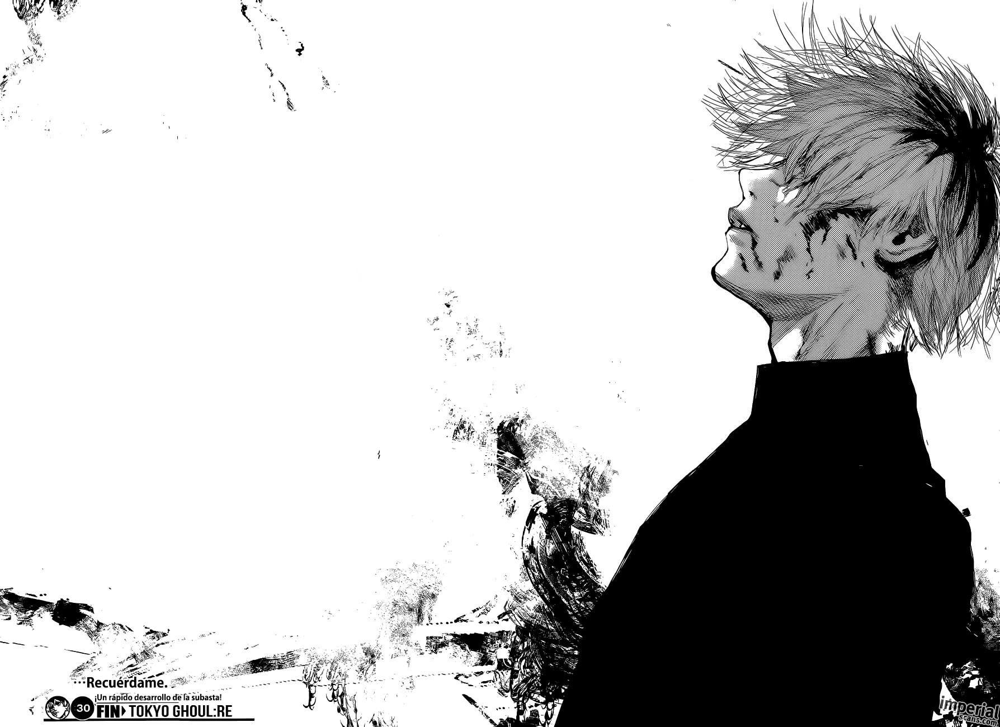

Sui Ishida (石田 スイ, Ishida Sui) es su pseudónimo como autor de mangas por lo que su nombre lo mantiene en privado, nacido el 28 de diciemnre de 1986 en la Prefectura de Fukuoko, Japón, es un famoso Mangaka por ser el autor del comic Tokio Goul.
Sui Ishida
(石田 スイ, Ishida Sui)
Informacación
Género:
Maculino
Ocupación
Mangaka
Su progenitor trabajaba en una gran empresa, y se mudaba a menudo, llevando consigo a su familia, por lo que residió en su infancia en muchas localidades de Japón, como Tokio, Saga, Tokushina e, incluso, en Taiwán. Por eso acabó siendo un niño solitario, sin amigos cercanos, que se aficionó, como distracción, al dibujo y a la lectura de mangas. También padeció un problema de sobrepeso, que luego solucionó en la adolescencia practicando deportes, en especial gimnasia.
Ha comentado en alguna ocasión que sus padres eran muy estrictos y ejercieron un control muy minucioso de sus calificaciones académicas. Finalmente, optó por matricularse en una universidad alejada de ellos, para poder vivir con más independencia y, más tarde, convertirse en mangaka. Se inició como autor de webcomics.
Tokyo Ghoul sería la serie que lo lanzaría a la fama en 2010, siendo adaptada como novela ligera y, posteriormente, como anime 2014. En aquel año, lanzó su secuela Tokyo Ghoul: re. Se llegaron a acumular más de veinte millones de copias en circulación entre ambas series.

Obras
Tokio Ghoul
Género
acción, drama, horror, terror psicológico, sobrenatural
Guión
Sui Ishida
Dibujo y Entintado
Sui Ishida
Sinopsis
En un mundo donde los humanos viven con miedo a los ghouls, seres humanoides que se alimentan de carne humana, Ken Kaneki es un estudiante de 18 años que conoce a Rize Kashimiro en una cafetería. Después de invitarla a salir, Ken es atacado por Rize, quien resulta ser un ghoul. Ken sobrevive gracias a la caída de unas vigas, pero queda gravemente herido. Para salvar su vida, recibe un trasplante de órganos de Rize y se convierte en mitad ghoul y mitad humano. Ahora, Ken debe adaptarse a su nueva condición y enfrentarse a los ghouls que amenazan Tokio.
Tokio Ghoul:re
Género
acción, drama, horror, terror psicológico, sobrenatural
Guión
Sui Ishida
Dibujo y Entintado
Sui Ishida
Sinopsis
En Tokyo, la tragedia sigue su curso. Los ghouls, seres misteriosos que se alimentan de carne humana, se propagan por sus calles. Mezclándose entre los humanos durante el día, aterrorizándolos al caer la noche.
En ese angustioso escenario el CCG, única institución que investiga y resuelve los casos relacionados con ghouls, encomienda una misión especial a Haise Sasaki, un talentoso investigador con un pasado enigmático.
Una puerta se ha abierto y los misterios tras ella serán revelados, días oscuros comienzan para Haise.
Choujin X
Género
ación, sobrenatural
Guión
Sui Ishida
Dibujo y Entintado
Sui Ishida
Sinopsis
Azuma y Tokio son amigos de la infancia, tan diferentes como el día de la noche. Pero cuando Tokio se convierte en un choujin, y por si fuera poco, uno deforme, Azuma le deja de lado para que se enfrente sin apoyo no solo a una transformación grotesca, si no a las luchas internas entre el resto de superhumanos.